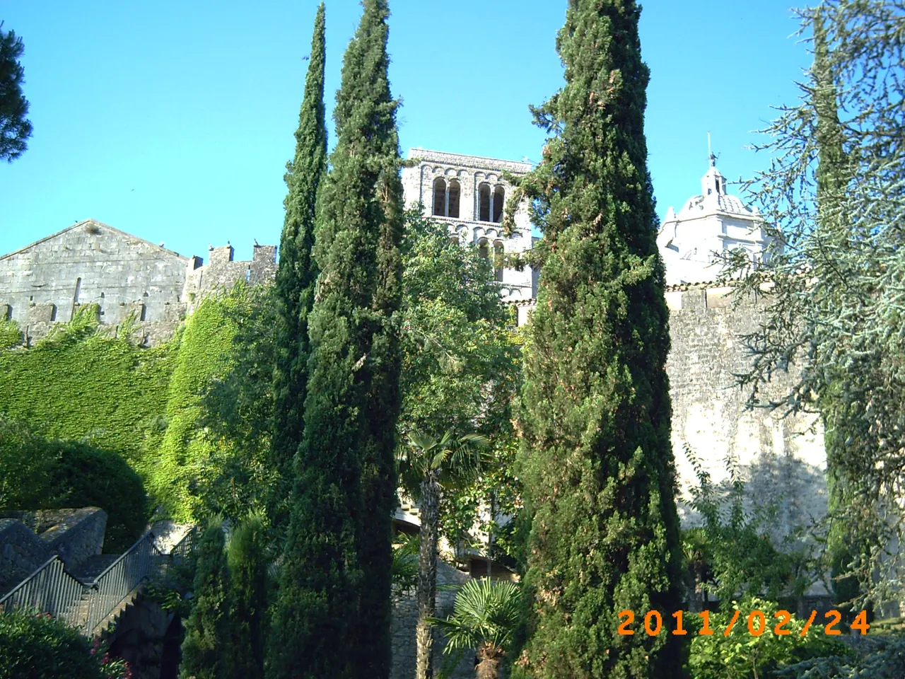
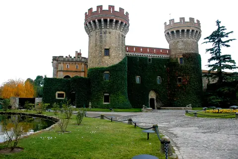

{kind=link}

Calella de Palafrugell
흰색 회반죽 가옥과 아치 회랑(Les Voltes), 쪽빛 바위 만(Cove)을 잇는 카미 데 론다 해안 산책로가 있는 코스타 브라바의 원형 어촌.

지로나는 프랑스와 이베리아반도를 잇는 전략적 요충지이자 아우구스타 가도(Via Augusta)의 길목이었기 때문에, 역사상 25번이 넘는 포위 공격을 견뎌냈다.
기원전 1세기 고대 로마인들이 세운 최초의 게룬다(Gerunda) 성벽 위에, 9세기 카롤링거 왕조 성벽, 14세기 페드로 4세 시절의 대규모 중세 성벽이 겹겹이 축성되었다. 19세기 말 프랑스 침공(나폴레옹 전쟁) 이후 일부가 헐렸으나, 현대에 약 2km에 달하는 성벽 상부 보행로(Passeig de la Muralla)가 완벽히 복원되어 유럽에서 가장 보존 상태가 좋은 성벽 산책로 중 하나로 꼽힌다.
성벽 위를 걷는 동안 발아래로는 미로 같은 유대인 지구(Call)와 대성당의 거대한 실루엣, 붉은 기와지붕들이 펼쳐지고, 북쪽 먼 시선 끝에는 눈 덮인 피레네산맥의 능선이 파노라마로 펼쳐진다.
지로나 구시가지의 지형과 방어 전략을 한눈에 체감할 수 있는 최고의 야외 조망 코스다. 대성당 뒤편 자르딘스 데 라 프랑세사(Jardins de la Francesa)에서 시작해 토레 지로넬라(Torre Gironella)를 거쳐 남쪽 구시가지로 내려오는 40~50분 코스를 강력히 추천한다.
| 운영시간 | 9월~5월 08:00-21:00, 6월~8월 08:00-23:00 (9/1~9/4 여행일은 08:00-21:00 적용) |
|---|---|
| 휴무 | 연중무휴(휴무일 고지 없음). 9~5월 08:00-21:00, 6~8월 08:00-23:00 |
| 예약 | 공식 페이지에 입장료·예약 관련 언급 없음(자유 통행 구간) 재확인 |
| 항목 | 상세 정보 |
|---|---|
| 위치 | Passeig de la Muralla, 17004 Girona (구시가지 동쪽 능선) |
| 운영 시간 | 상시 개방 (일출~일몰, 야간에는 안전을 위해 일부 게이트 폐쇄) |
| 입장 요금 | 무료 (Free Admission) |
| 권장 복장 | 편안한 운동화 필수 (성벽 바닥이 울퉁불퉁한 돌과 계단으로 구성) |
| 접근성 | 대성당 뒤편 정원 또는 남쪽 카탈루냐 광장 부근 계단으로 언제든 진입/퇴출 가능 |
⚠ 주의 사항: 한여름 정오(12:00~15:00)에는 성벽 위에 그늘이 전혀 없으므로 강한 직사광선을 피해 늦은 오후에 방문할 것을 권장합니다.
지로나는 오냐르(Onyar) 강과 테르(Ter) 강이 만나는 충적 평야와 몬주익(Montjuïc) 언덕이 솟아오른 천혜의 요새 지형이다. 성벽은 언덕의 자연 능선을 따라 계단식으로 축조되었으며, 성벽 곳곳에 감시탑(Torre)을 세워 동쪽 계곡과 서쪽 평야에서 접근하는 적을 사전에 탐지할 수 있었다.
흰색 회반죽 가옥과 아치 회랑(Les Voltes), 쪽빛 바위 만(Cove)을 잇는 카미 데 론다 해안 산책로가 있는 코스타 브라바의 원형 어촌.

앙리 마티스와 앙드레 드랭이 야수파(Fauvism)를 탄생시킨 지중해 항구마을이자 마요르카 왕국의 해상 왕궁.

세계 최대 폭(23m)의 기둥 없는 단일 고딕 신랑과 11세기 창조의 태피스트리를 품은 카탈루냐 고딕의 걸작.

구시가지와 신시가지를 가르는 오냐르 강변의 파스텔톤 채색 가옥들과 구스타브 에펠의 붉은 철교.

엠포르다 평야가 내려다보이는 언덕 위에 완벽하게 복원된 카탈루냐 고딕 석조 요새 마을.

14세기 중세 성채와 카르멜회 수도원, 카탈루냐 카바(Cava) 와이너리 박물관이 있는 역사 마을.